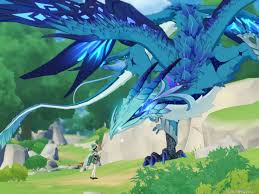

Genshin Impact — масштабная игра, которая погружает игроков в мир, где Архонты правят землей, а Глаза Бога даруются достойным смертным. Игра следует за Путешественником, который отправляется на поиски своего пропавшего брата и сестры вместе с напарником Паймон. Вооруженный способностью подключаться к элементам без Глаза Бога, Путешественник нарушает все законы Тейвата и совершает почти невозможные подвиги. Игра относится к категориям экшен, роллевые.Genshin Impact - вдохновленный серией The Legend of Zelda.
В самом начале нас втречает неизвестная богиня, которая вас разлучает с сестрой или братом. После битвы с богиней путишественник попал в мир Тейвата.Весь месяц он провет один скучая по сестре или брату.Спустя некоторое время он (она) встречает Паймон вылавливая ее из воды.После этого как нестрнно гг идет иследовать ближайшую местность.И с этого момента начинается обучение к управлению игрой.
Из персонажей на данный момент мы имеим путишественника, Паймон брата или сестру и неизвеструю богиню.
В мире Тейвата есть семь регионов и один из них это Мондштадт.Город свободы что освободили от тирании. Барбатос архонт свободы что освободил жителей "истес".Стиль города выполнин в европейском стиле с небльшими примечаньями средневековья.Люди там свободные, доброжелательные, веселые итд.
Основной сюжет это спасти город и Двалина (даркона).
Когда вы дойдете до отпеделенного места то встретите мальчика в зеленом который говорил с Двалином.Дракон вас заметит и улетит а мальчик убежит. После Двалина останется его слеза окутаная ненавестью вы должны будите взять эту слезу потом по пути она очистеца от скверны.По пути вы встречаете Эмбер скаута орда фавониюс.Вместе с ней вы убиваете хиличурлов также получаете ее качестве персонажа (существа этого мира).Эмбер обьесняет что да как и вы заходите в город.Также в встретите того мальчика в зеленом и начинается погоня за ним.Вы узнаете его имя что он бард.Третим персонажем которого вы встретите это Кея капита ковалерии.Спустя некоторое время на Мондштадт наподает дракон которого вы должны обезвредить.После успешной победы над ним Магистр орда фавониус Джинн пригласит вас на биседу.Ваш разговор будет заключатся на раннее произошедшем.
Фатуи - это организация из Снежной (один из регионов Тейвата)разбирающейся с дипломатической стороны и военной.В сюжете они играют роль антогонистов (злодеи) которые гоняются за сердцами богов.Зачем им это пока неизвестно.
Сердце бога - это предмет с немыслемой силы что черпает энергию прямяком из Селестии.Иначе говоря этому пердмету нет цены
Вернемся к основному сюжету.С разговора с Джинн вы узнаете что фатуи замешаны в этом деле.Они хотели убить или обезвредит Двалина.После полного разговора у вас откроется молитвы.
(Молитвы - это gacha-система Genshin Impact.В котором за 160 примогемов 1 крутка. За 1600 примогемов это 10 круток. Так же в этих банерах есть гарант в 90 куток это 100% гарант но и существует 50\50 в которомможет выпасть лега (легендарный персонаж или оружее).
Банеры - есть эвентовые, стандартный и банер новичка.В банере новичка максемальное кол-во круток это 20. А в эвентовом и стандартном нет ограничения в крутках.Эвентовый банер временный и по этому его надо крутить больше чем стандарт.Стандарт банер не куда не уйдет и там постоянные леги и фиолки (4 зведные персонажи).)
Вы отправитесь в путишествие подзимелья где вам будут помогать персонажи Лиза, Кея, Эмбер. После всего этого вам нужно будет докачивать ранги чтобы выполнять задения сюжеты.Также у вас будут доп.задания где вы можете получить опыт.
Персонажи:Магистр орда фавониус Джинн, Капитан ковалерии Кейя, Библеотекарь Лиза и скаут Эмбер.
Когда вы докачаете 16 или 15 ранг то у вас откроется новое задание где вам нужно будет победить Двалина.Вы вместе с Джинн Дилюком(это брат, Кеи что управляет винокурней "Расвет".Также вы в ним пойдете в подемелье с фатуи.) и Венти (мальчик в зеленом, бард) Но перед этим вам нужно будет отыскать его логово.Его логово даже искать.После того как войдете в логово у вас будет что-то подобие стрелялок где вы должны будите попадать по дракону.Так же вы должны будите уклоняться от выстрелов Двалина и забирать что-то типо укорителей, что бы быстрее догнать его.Во "второй" фазе вы приземлитесь на платформы где будете сражаться.
Сражаться с этим боссом очень легко надо уворачиваться от атак прыгать с платформы на другии итд. Для сражения подойдут любые персонажи, главное правильно составить отряд:
После освобождения дракона вы станете почетным рыцарем.И вы ухдите в Ли Юэ искать гео архонта.